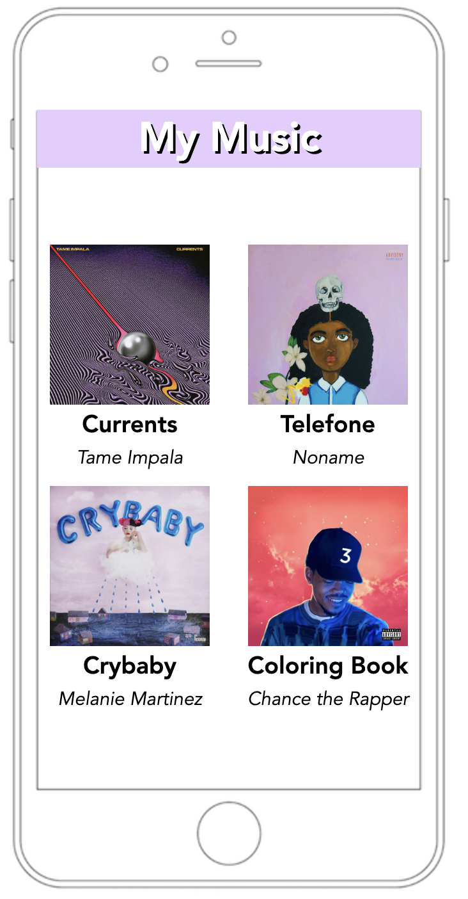
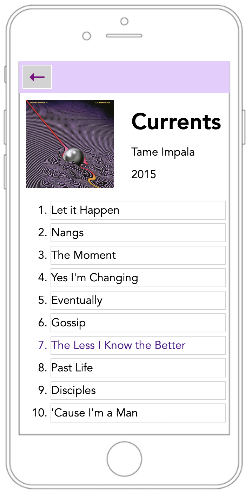
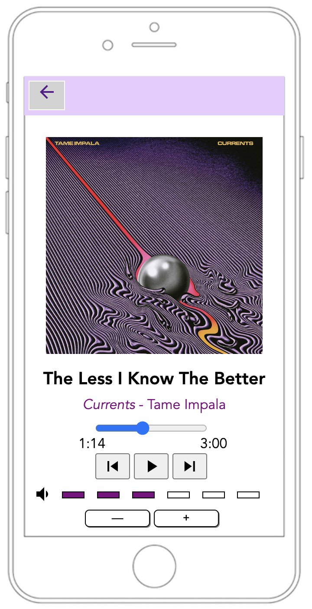

iPod Player
This project uses HTML, CSS, and JavaScript to create a fictional iPod interface in your web browser. The iPod player is interactive, and the user can click through albums and songs, as well as operate the player. Images of the iPod can be seen below.


